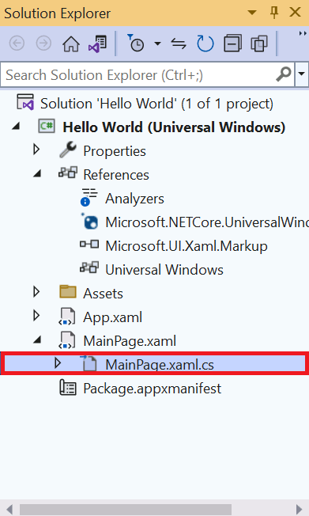
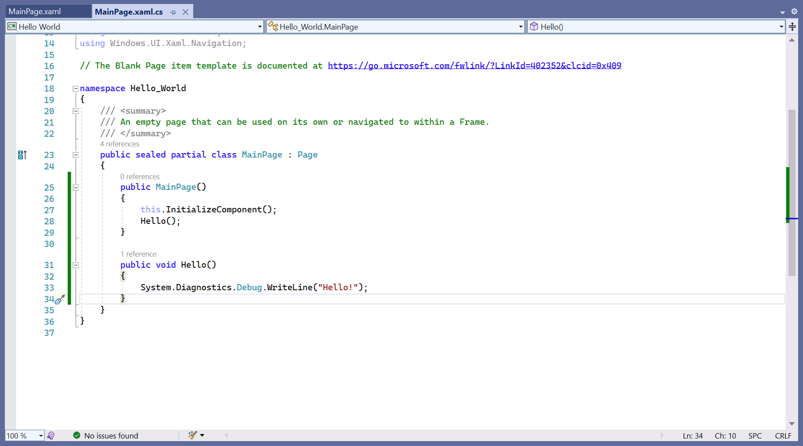
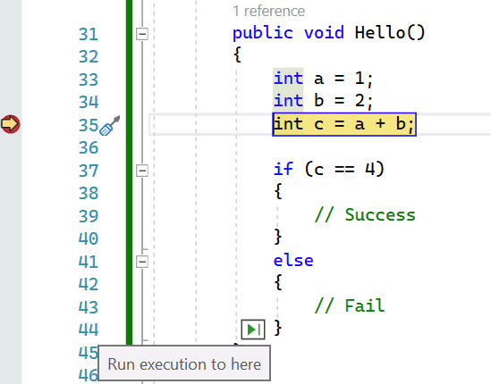

The basics of debugging in Visual Studio
It's difficult to write error-free code. Use Visual Studio to find the bugs in your project.
Simple debugging
Add print statements to your project to see how your code is being executed. Code that isn't executing effectively can cause bugs. Use this method for simple debugging on smaller projects. This method isn't recommended for anything other than simple projects.
Add print statements to your Universal Windows Platform (UWP) project:
- In the Solution Explorer, expand MainPage.xaml and select MainPage.xaml.cs. 
- Scroll down in the Editor Window until you find the following code:
- Click the Run button or press the F5 key to run your project.
- Minimize the app window and bring Visual Studio back into view. Select Output to view the Hello! message created by your app.
- Click the Stop button to stop the app.
The C# code here is associated with the window that displays in your app.
public MainPage()
{
this.InitializeComponent()
}
Change it to this code:
public MainPage()
{
this.InitializeComponent();
}
public void Hello()
{
System.Diagnostics.Debug.WriteLine("Hello!");
}
Your Editor Window should look like this:

NOTE
You can also display debug text in Windows Presentation Foundation (WPF) and Windows Forms apps.

Better debugging
Use breakpoints to stop an app at specific points to find out what's going on with it. Let's see how this works.
- Update your
Hello()function to match this code: - Select inside the gray margin next to the line containing the code
int c = a + b;. A red dot displays. This dot is your breakpoint. - Select Run or press F5 to start your app again.
- Select Step into and watch the yellow arrow follow the flow of control.
- Hover over the variable
c. - Hover near the closing braces until a green arrow appears. 
- Select the Stop button to stop running your app.
public void Hello()
{
int a = 1;
int b = 2;
int c = a + b;
if (c == 4)
{
// Success
}
else
{
// Fail
}
}
Your Editor Window should look like this:
Explanation: The app wants a value of 4 to execute the Hello() function. Unfortunately, in this case, a + b doesn't equal c. Let's examine the line performing this calculation using a breakpoint.
The app stops running immediately. A small yellow arrow appears within the margin, next to the line containing the error. The highlighted line of code is what runs next.
With your program paused, you can step through it line by line using the Step into, Step over, and Step out buttons on the toolbar.
A window appears to display the current value of the variable. As we know, it's 3, not the 4 our function expects.
This breakpoint allows the app to run until it reaches the containing line.
The philosophy of debugging
A quick word on debugging. Knowing the tools you have at your disposal is half the battle. Understanding why something isn't working takes experience, patience, and luck. Use these tips to debug code:
- Understand that your code is doing exactly what you asked it to do. You just asked it to do the wrong thing.
- Explain your code, line by line, to a friend, or even to yourself. Saying things out loud can help.
- Break up your code into smaller and smaller sections—a form of refactoring—to confirm that each section is working.
- Sometimes it helps to take a break and clear your mind.